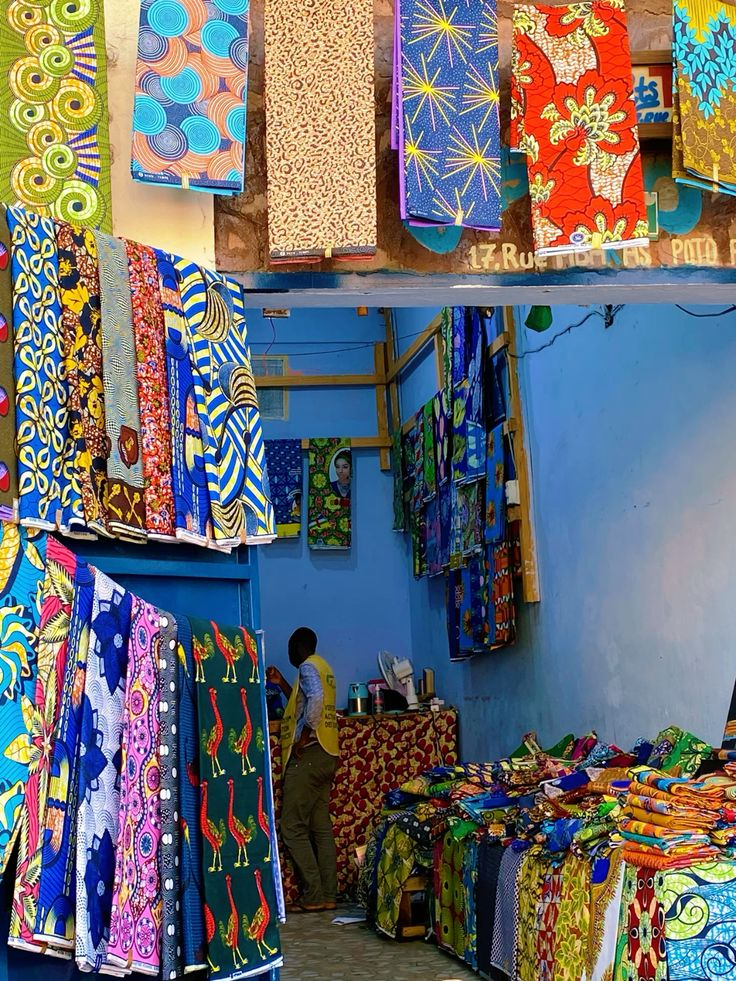
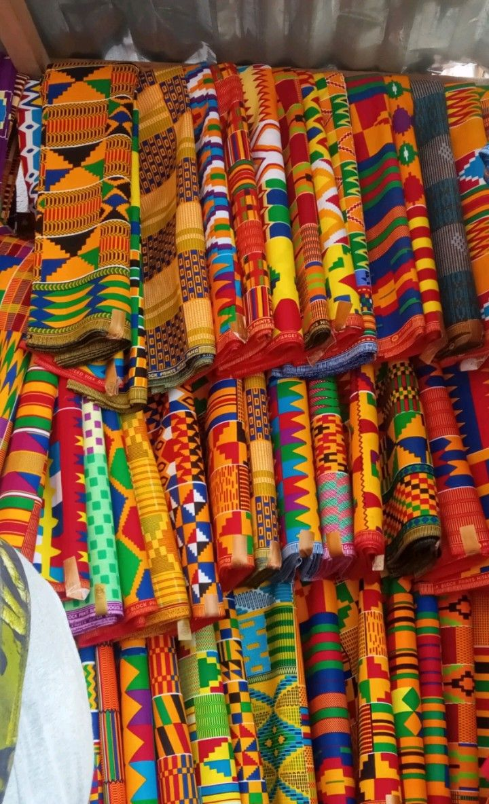
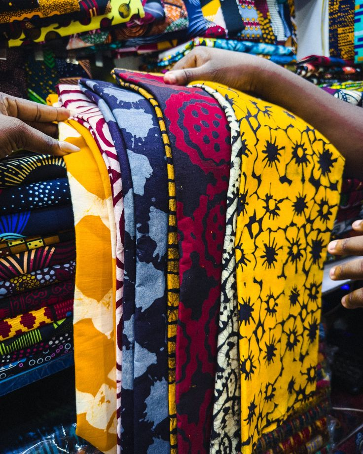
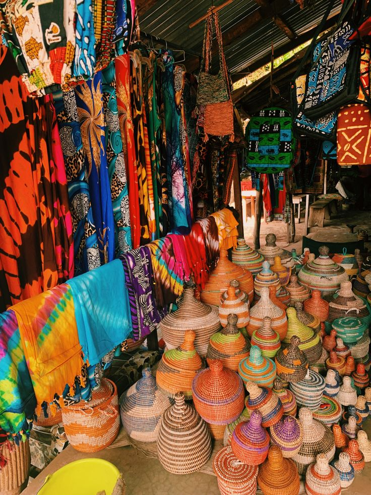
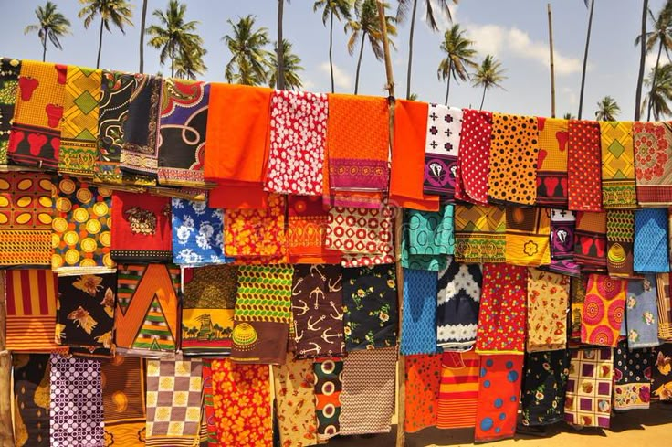

sometimes you go somewhere for a specific reason and leave understanding something completely different.
i was at the idu markets because i needed fabric samples for the styclick pitch. there are suppliers there who understand quality, who understand what people are actually looking for. i thought it would be a quick trip. it wasn't. i got lost in one of the buildings — which is not hard to do. the markets are a maze. there's a specific quality to the chaos that makes sense if you're used to it and is completely incomprehensible if you're not.
stumbled into a shop run by this older woman who took one look at me and immediately brought me cold water and a place to sit. didn't ask questions. just saw that i looked overwhelmed and fixed it. we ended up talking for an hour. she's been running that shop for longer than i've been alive. knows every supplier. every manufacturer. knows the fabric better than anyone i've met.





talking to her made me realize that what she has is not actually a problem that needs solving. it's a solution that already exists. she knows what she needs. she knows where to find it. the market works for her because she's inside it. the problem is the people outside the ecosystem who need to find her. that's actually what styclick should solve.
not trying to move the market online. trying to create a bridge for people who are intimidated by the market in its current form. it's a different product than what i was building. i spent two hours after i got home rewriting the entire value proposition. that's what happens when you actually listen to the people your product is supposedly for.
she gave me her number. said if i ever needed fabric advice i should call. i'll call. she's part of the actual solution.
← Back to Blog